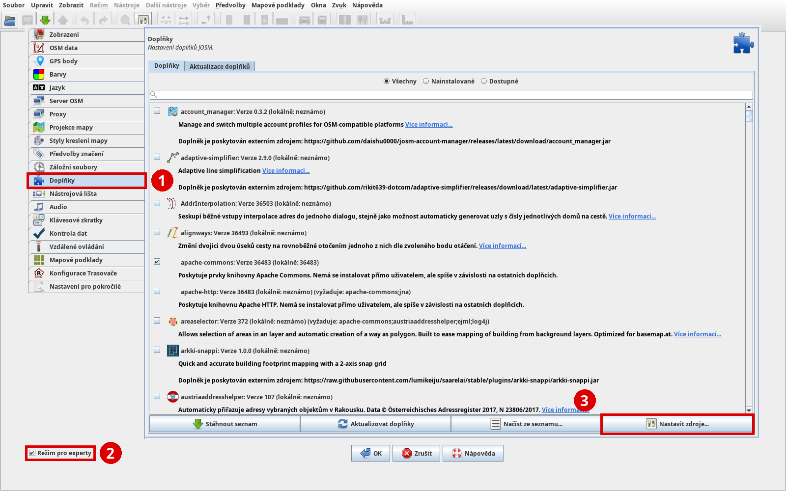
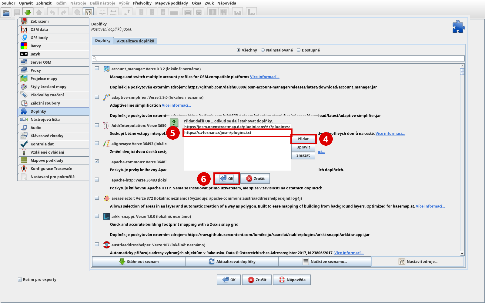

Tracer, který bere budovy a parcely z RÚIAN přímo od ČÚZK, ne přes poloha.net. Nahrazuje plugin Tracer-testing. Ovládá se stejně jako dřív.
F12) a vlevo vyber Doplňky (na obrázku 1). Celá instalace probíhá na téhle stránce, Nastavení pro pokročilé nepotřebuješ.
https://s.vfosnar.cz/josm/plugins.txt a potvrď OK. Adresa se objeví v seznamu (5). Okno zavři tlačítkem OK (6).

tracer.Trasuje se jako dřív: Další nástroje → Trasovač nebo klávesa T, pak klik do budovy.
Kdo Tracer-testing používal, má moduly nastavené a nic dalšího nedělá. Kdo ne a Trasovač se nezapne: Předvolby → Konfigurace Trasovače, přesuň ruian do Enabled modules tlačítkem >>, OK a restartuj JOSM.
Aktualizace přicházejí přes běžnou aktualizaci pluginů v JOSM. Zdrojový kód: Tracer-cuzk-src.tar.gz (GPL, vychází z mkyral/josm-tracer).